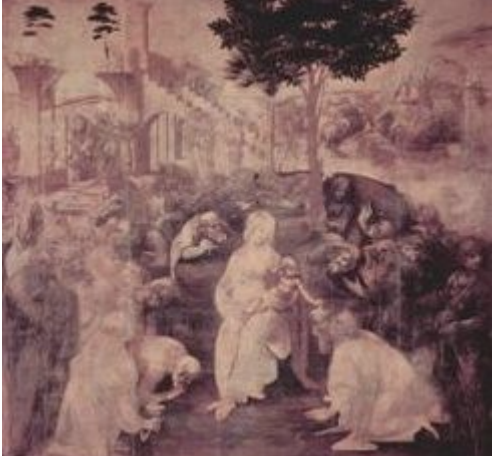

Leonardo nasce il 15 Aprile 1452 ad Anchiano di Vinci, non lontano da Firenze. È figlio naturale di un notaio, Ser Piero.
A sedici anni il nonno Antonio muore e tutta la famiglia, dopo poco, si trasferisce a Firenze. La precocità artistica e l’acuta intelligenza del giovane Leonardo spingono il padre a mandarlo nella bottega di Andrea Verrocchio: pittore e scultore orafo acclamato e ricercato maestro. L’attività esercitata da Leonardo presso il maestro Verrocchio è ancora da definire, di certo c’è solo che la personalità artistica di Leonardo comincia a svilupparsi qui. Possiede una curiosità senza pari, tutte le disclipline artistiche lo attraggono, è un acuto osservatore dei fenomeni naturali e grandiosa è la capacità di integrarle con le sue cognizioni scientifiche.
Nel 1480 fa parte dell’accademia del Giardino di S. Marco sotto il patrocinio di Lorenzo il Magnifico. È il primo approccio di Leonardo con la scultura. Sempre un quell’anno riceve l’incarico di dipingere l’Adorazione dei Magi per la chiesa di S. Giovanni Scopeto appena fuori Firenze (oggi quest’opera si trova agli Uffizi).
L'Adorazione dei Magi
Tuttavia, l’ambiente fiorentino gli sta stretto. Si presenta allora, con una lettera che rappresenta una specie di curriculum in cui descrive le sue attitudini di ingegnere civile e costruttore di macchine belliche, al Duca di Milano Lodovico Sforza, il quale ben lo accoglie.
Ecco nascere i capolavori pittorici: la Vergine delle Rocce nelle due versioni di Parigi e di Londra, e l’esercitazione per il monumento equestre in bronzo a Francesco Sforza.